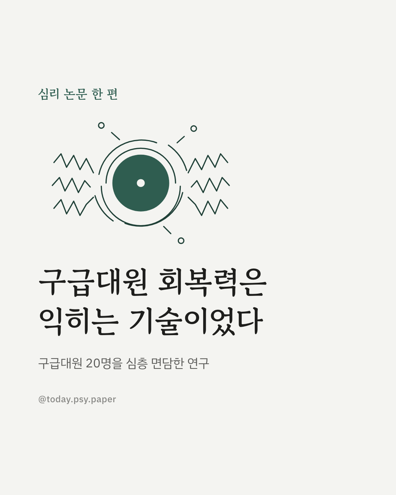
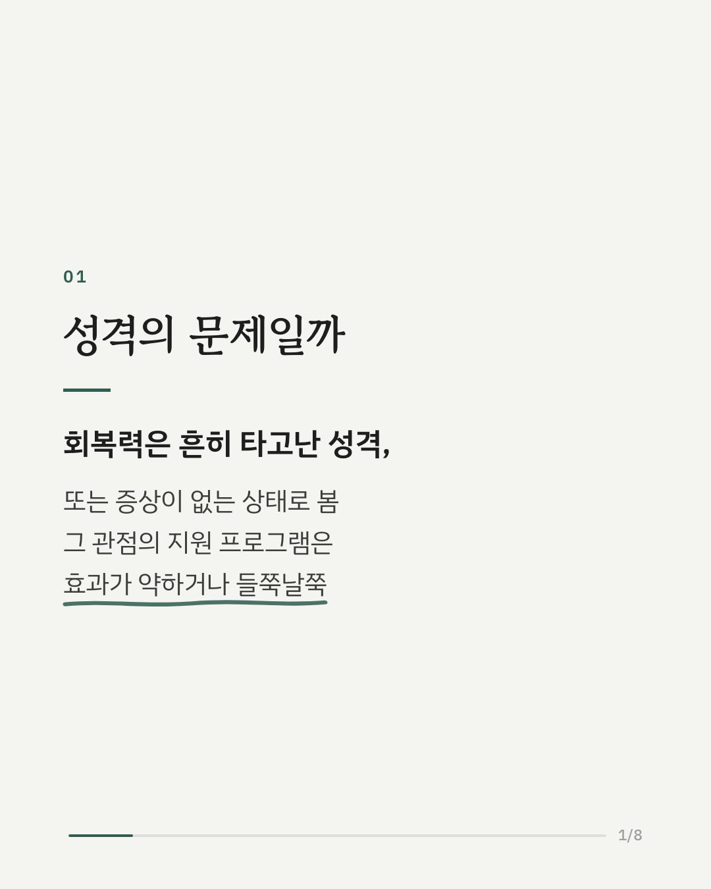
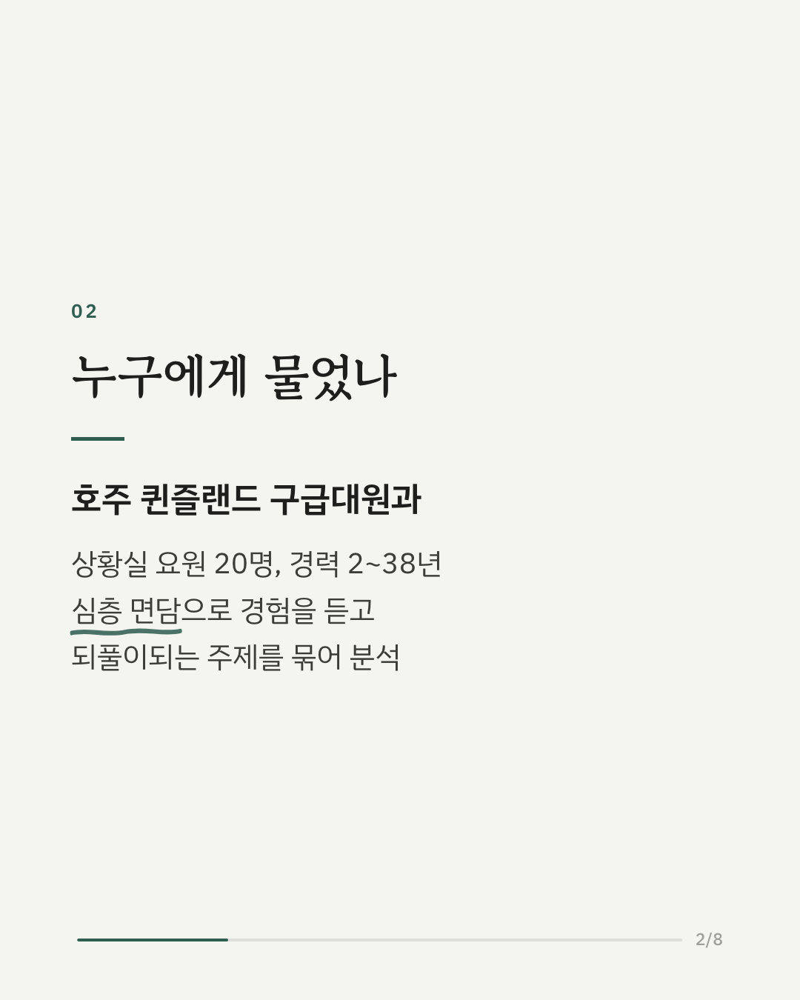
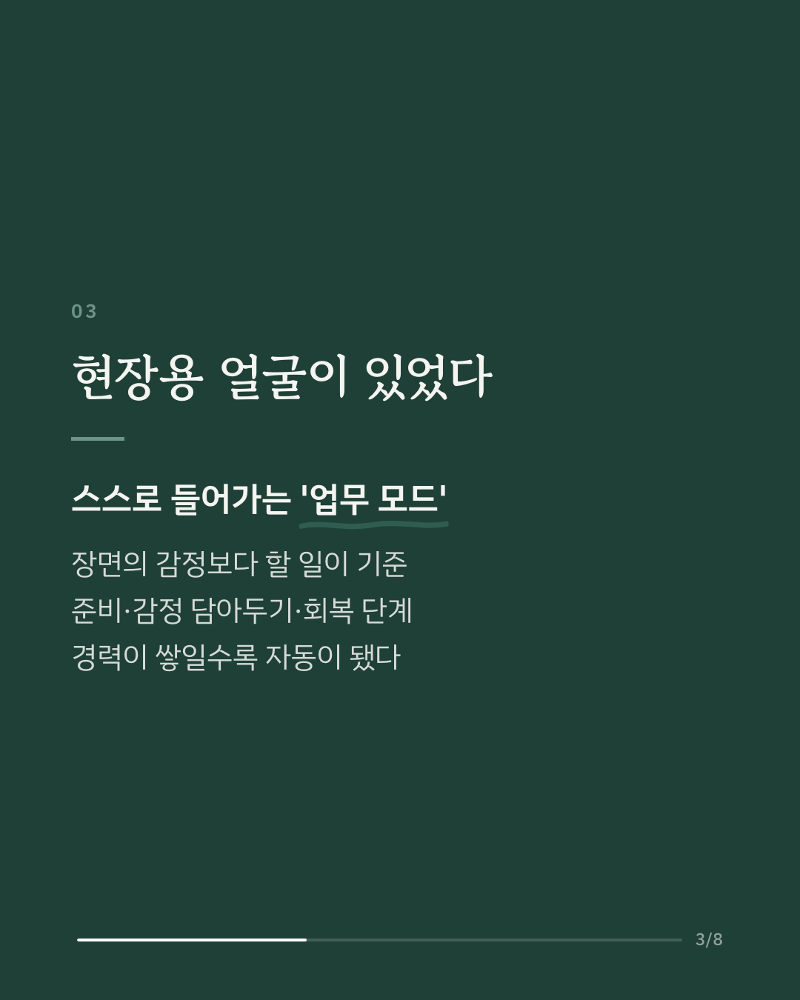
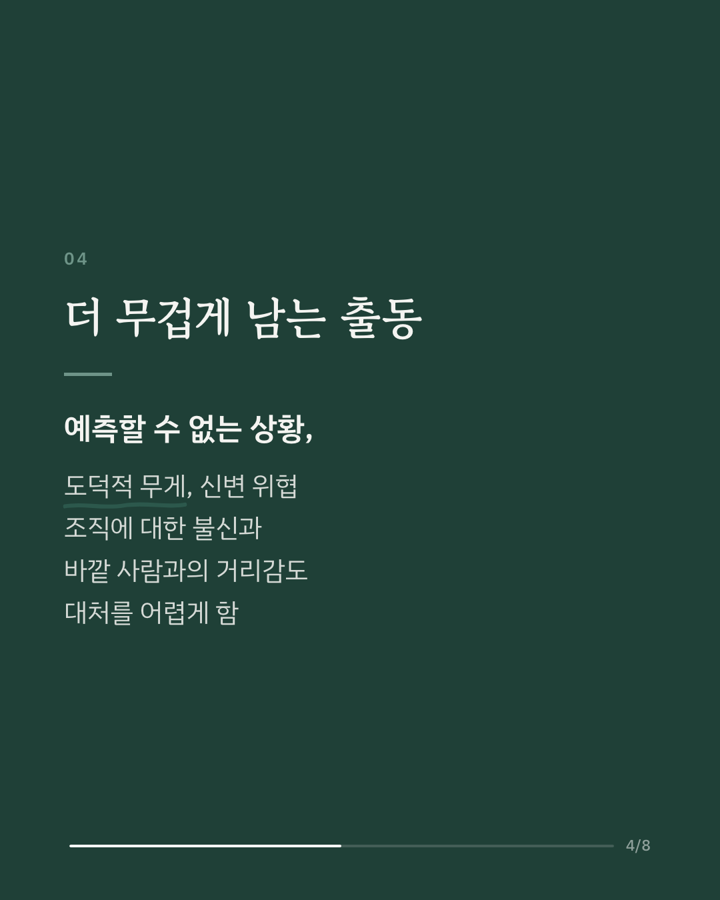
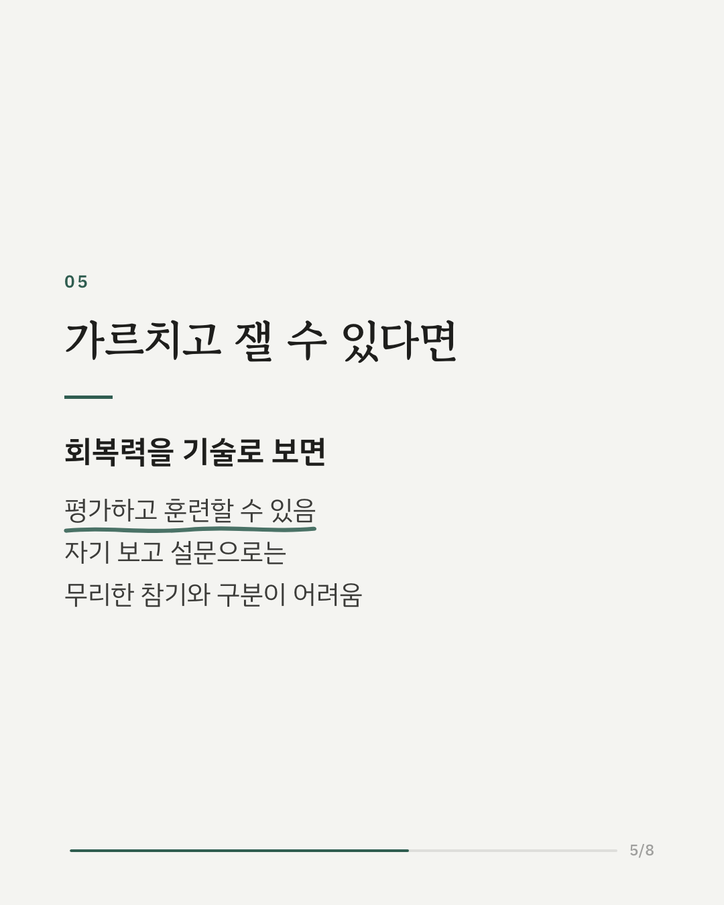
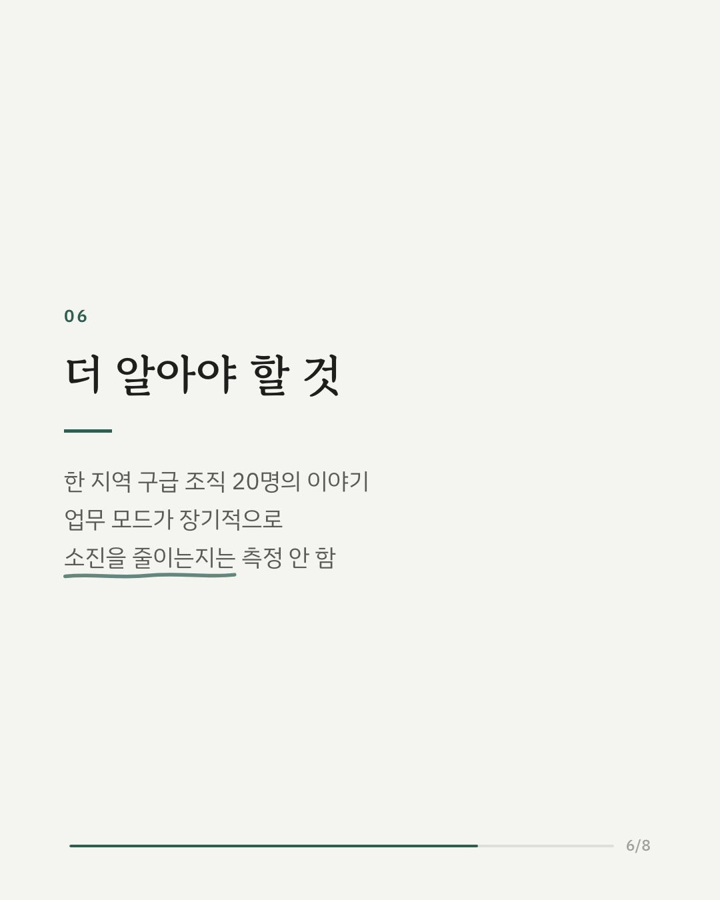
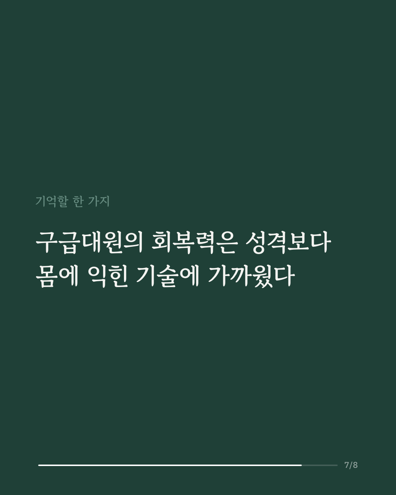
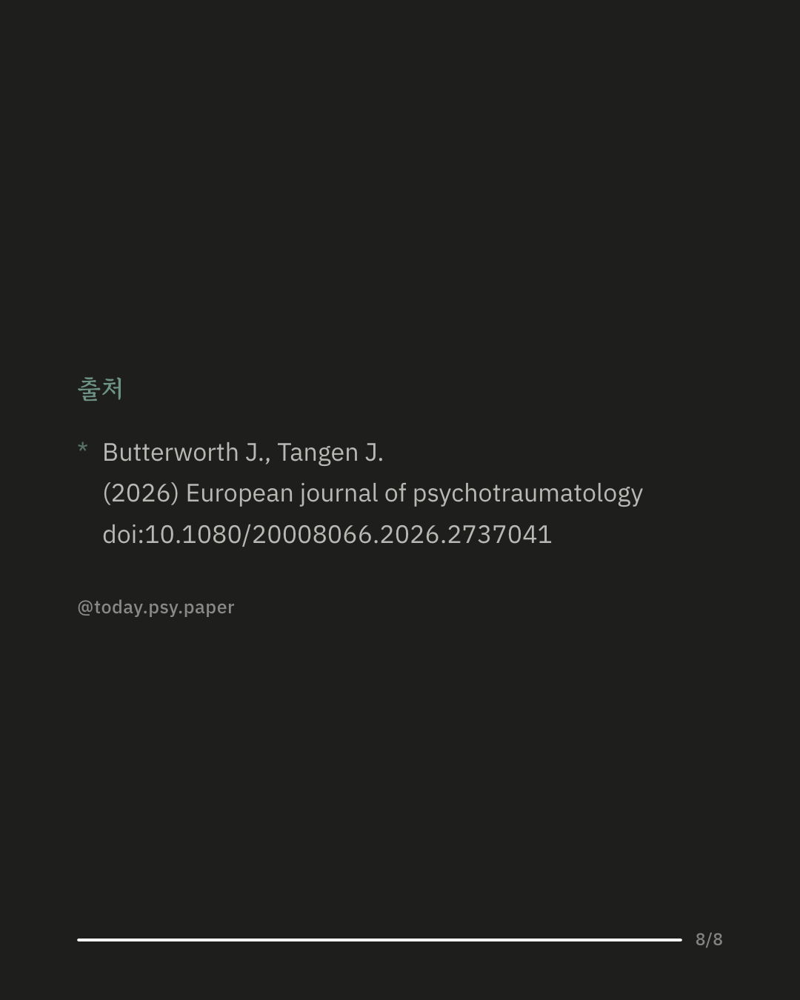

트라우마를 자주 겪는 직업의 회복력은 흔히 타고난 성격이나 증상이 없는 상태로 여겨집니다. 이 연구는 구급대원의 회복력을 숙련된 기술로 볼 수 있는지 살펴봤습니다. 호주 퀸즐랜드의 구급대원과 상황실 요원 20명(경력 2~38년)을 심층 면담해 공통된 주제를 분석했습니다. 예측할 수 없는 상황, 도덕적 무게, 신변 위협이 현장의 충격을 키웠습니다. 대원들은 현장에서 의도적으로 '업무 모드'에 들어가 장면의 감정보다 해야 할 일에 맞춰 움직였습니다. 이 모드에는 준비, 감정 담아두기, 회복의 단계가 있었고 경력이 쌓일수록 애쓰지 않아도 자연스럽게 작동했습니다. 조직에 대한 불신과 바깥 사람과의 거리감은 대처를 어렵게 했습니다. 연구진은 회복력을 기술로 보면 평가하고 훈련할 수 있으며, 기존 자기 보고 설문으로는 진짜 회복력과 오래 못 갈 무리한 참기를 구분하기 어렵다고 말합니다. 다만 한 지역 구급 조직 20명의 이야기이고, 업무 모드가 장기적인 소진을 줄이는지는 측정하지 않았습니다. 출처: European Journal of Psychotraumatology (2026), 'Ask the experts: a practitioner-centred approach to resilience in emergency medical services' DOI: 10.1080/20008066.2026.2737041 #임상심리 #정신건강정보 #심리학연구 #논문리뷰 #회복력 #트라우마 #구급대원 #직무스트레스
python3 publish.py 42900532